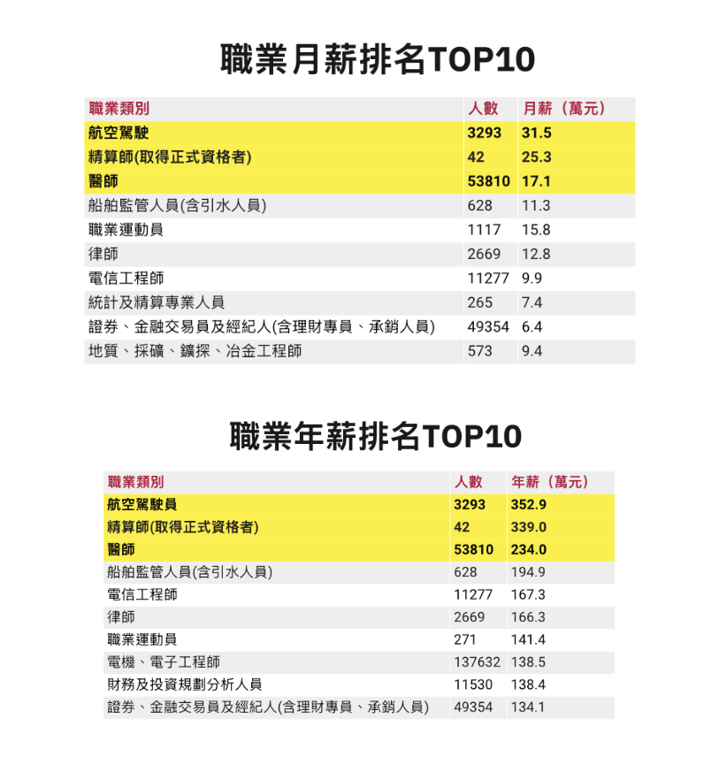

呈現目標：
希望呈現詳細職業的薪資排名與人數的關係。
原本問題：
無法明顯看出薪水和人數的關係，且多比數據放在一起後，無法更清楚的得知前十名彼此間的差異狀況。
改良選擇與分析：
- 已知只會呈現前十名的職業薪水狀況，因此使用 Treemap 的方式，在區塊內依照薪水多寡劃分。
- 在藉由顏色的深淺，僅將前三名的顏色由深至淺，其餘則以最淺的顏色呈現。用以凸顯結果。
- 為了呈現人數的明顯差異，我前十名的受僱人數作為總額，再以 1000:1 的算法進行計算。
- 以「一千人當中會有幾個人在此職業工作」的想法，呈現於各個職業的範圍當中。
- 使用直觀的可愛小人圖片，放入 Treemap 中觀察。
- 藉此可以明顯看到前十名的職業，受僱人數的分佈。
- 也可觀察出，前三名的職業受僱人數的差距。
- 為簡化並減少不必要的資訊，亦可以藉由鼠標的觸碰或點擊查看詳細的資訊。（互動效果）
發現問題：
因為像精算師的受僱人數只有十位數，而某些職業卻有十萬人的受僱人數，因此既使壓制一千人（原本嘗試壓到一百人）仍無法呈現真實的樣貌，只能夠成功呈現彼此間的差異。意即有鑑於受僱人數較多的薪資排名又非在前十名當中的情況，造成可愛的小人圖片並無法順利全部呈現的結果。
導致這份圖表的結果並不會像使用長條圖般的精準；而我亦有使用雙Ｙ軸的方式想嘗試呈現兩種數據資料，然而薪資和人數都為類別型資料，無法以長條圖和折線圖的結合呈現；而若使用堆疊長條圖，仍會有受僱人數過低而無法辨識的問題。